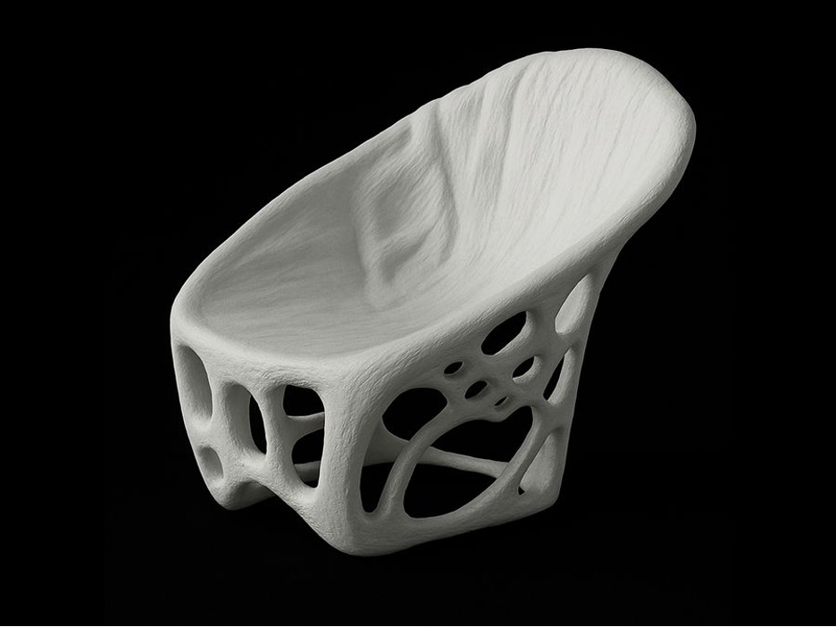

ThisChairDoesNotExist
Tomas Bata University in Zlín
The latest iteration of ModificAI explores the possibilities of generating chair designs using text prompts and reverse processes. By intersecting digital and traditional design, it brings new creative approaches using 3D printing.